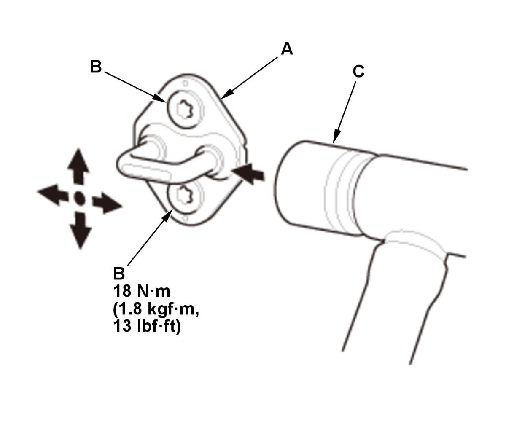

Door Striker Adjustment: Adjustment
- Door Striker - Adjust

Courtesy of HONDA, U.S.A., INC.Make sure the door latches securely without slamming it. If necessary, adjust the striker (A): The striker can be adjusted slightly up or down, and in or out. 1. Loosen the screws (B) with a TORX T40 bit.
2. Wrap the striker with a shop towel, then adjust the striker by tapping it with a plastic hammer (C). Do not tap the striker too hard.
3. Lightly tighten the screws.
4. Hold the outer handle out, and push the door against the body to be sure the striker allows a flush fit. If the door latches properly, tighten the screws to the specified torque, and recheck.